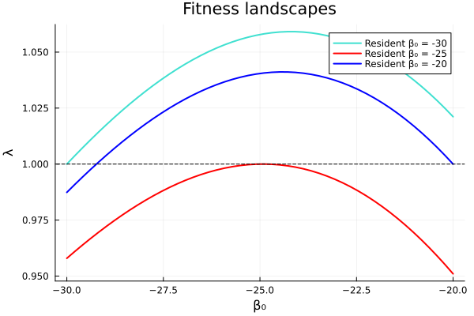
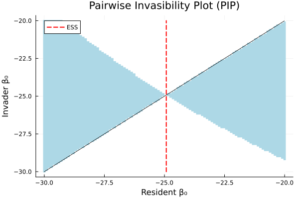
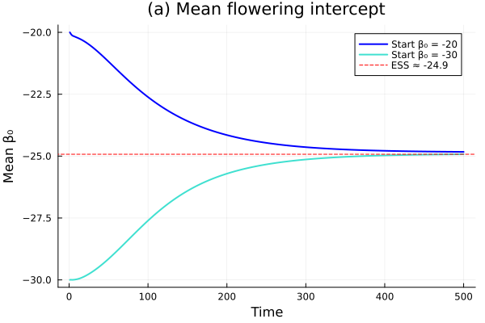
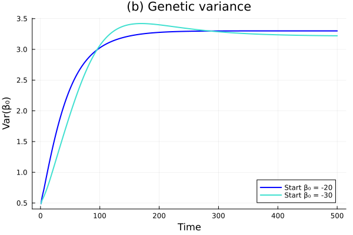
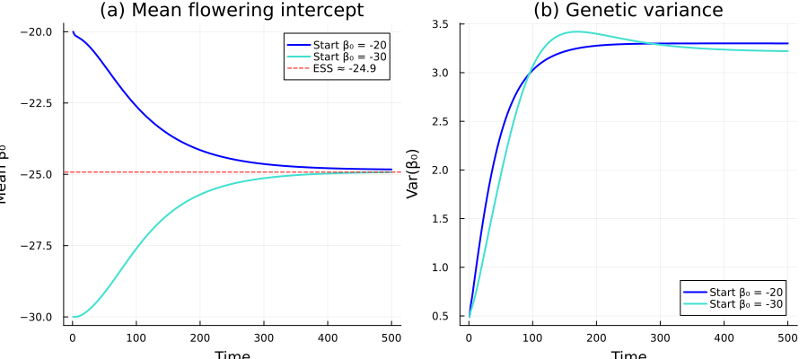
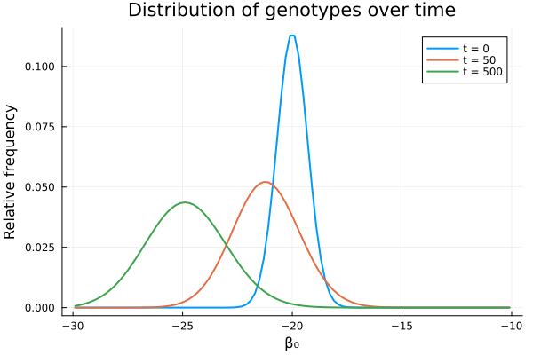
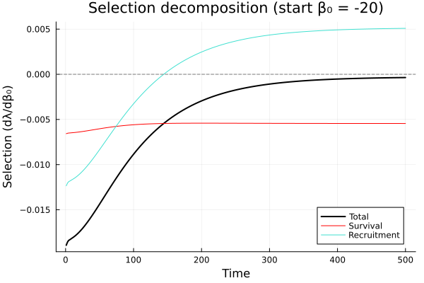
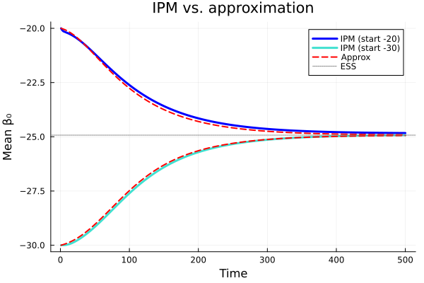

Evolving IPMs: Evolutionary Demography
Overview
This vignette implements the evolving integral projection model from Rees & Ellner (2016, Methods in Ecology and Evolution), which links demography with evolution. The key idea is to track a heritable trait — the flowering intercept $\beta_0$ — alongside body size $z$ in a two-dimensional IPM.
The model is based on the monocarpic perennial Oenothera glazioviana (evening primrose), where:
- Plants grow vegetatively, then flower once and die
- The probability of flowering depends on size and genotype: $\text{logit}(p_b) = \beta_0 + \beta_1 z$
- The flowering intercept $\beta_0$ is heritable with Gaussian mutation
- Density dependence operates through a fixed number of recruits per year
We cover:
- Fitness landscapes: $\lambda(\beta_0)$ as a function of the flowering strategy
- Evolutionarily Stable Strategies (ESS): finding the uninvadable flowering strategy
- 2D IPM dynamics: joint size $\times$ genotype projection
- Evolutionary trajectories: mean and variance of $\beta_0$ over time
- Selection decomposition: survival vs. recruitment components
Setup
using IntegralProjectionModels
using Distributions
using LinearAlgebra
using PlotsModel Parameters
Parameters from Kachi & Hirose (1985) and Rees & Rose (2002). Size is on a log scale.
# Survival (logistic regression)
surv_int = -0.65
surv_z = 0.75
# Flowering probability (logistic regression)
flow_int = -18.0 # default value — the evolving trait
flow_z = 6.9
# Growth (normal distribution)
grow_int = 0.96
grow_z = 0.59
grow_sd = 0.67
# Recruit size distribution
rcsz_int = -0.08
rcsz_sd = 0.76
# Seed production (log-linear)
seed_int = 1.0
seed_z = 2.2
# Establishment probability
p_r = 0.0070.007Vital Rate Functions
s_z(z) = 1.0 / (1.0 + exp(-(surv_int + surv_z * z)))
p_bz(z, β₀) = 1.0 / (1.0 + exp(-(β₀ + flow_z * z)))
G_z1z(z_prime, z) = pdf(Normal(grow_int + grow_z * z, grow_sd), z_prime)
b_z(z) = exp(seed_int + seed_z * z)
c_0z1(z_prime) = pdf(Normal(rcsz_int, rcsz_sd), z_prime)c_0z1 (generic function with 1 method)The survival kernel $P$ and fecundity kernel $F$ are:
$
P(z', z; \beta0) = (1 - pb(z, \beta_0)) \cdot s(z) \cdot G(z'|z) $
$
F(z', z; \beta0) = pb(z, \beta0) \cdot b(z) \cdot pr \cdot c_0(z') $
Note that flowering is fatal in monocarps — only non-flowering plants enter the P kernel.
P_z1z(z_prime, z, β₀) = (1.0 - p_bz(z, β₀)) * s_z(z) * G_z1z(z_prime, z)
F_z1z(z_prime, z, β₀) = p_bz(z, β₀) * b_z(z) * p_r * c_0z1(z_prime)F_z1z (generic function with 1 method)Part 1: Building the 1D IPM
First, we build the standard 1D IPM for a fixed genotype $\beta_0$.
L_z = -5.5
U_z = 6.5
n_z = 100
domain_z = ContinuousDomain(L_z, U_z, n_z)
z = meshpoints(domain_z)
h_z = step_size(domain_z)0.12"""
Build the 1D kernel matrix for a given flowering intercept β₀
and recruitment probability p_r.
"""
function build_kernel(z, h_z, β₀, pr)
m = length(z)
P = zeros(m, m)
F = zeros(m, m)
for j in 1:m, i in 1:m
P[i, j] = h_z * P_z1z(z[i], z[j], β₀)
F[i, j] = h_z * F_z1z(z[i], z[j], β₀)
end
# Replace p_r with the provided value
if pr != p_r
F .*= pr / p_r
end
return P, F, P + F
endMain.build_kernelP_mat, F_mat, K_mat = build_kernel(z, h_z, flow_int, p_r)
λ_default = real(eigvals(K_mat)[end])
println("λ with default β₀ = $flow_int: ", round(λ_default, digits=4))λ with default β₀ = -18.0: 1.0687Part 2: Fitness Landscapes and ESS
$\lambda$ as a function of $\beta_0$
For an evolving trait, we need to find the flowering strategy that maximizes fitness. With density dependence through a fixed number of recruits, the resident population is at equilibrium when $\lambda = 1$. This is achieved by adjusting $p_r$ to make $R_0 = 1$.
"""
Compute R₀ for a given parameter set by finding the dominant eigenvalue
of the next-generation matrix F × N, where N = (I - P)⁻¹.
"""
function compute_R0(z, h_z, β₀, pr)
P, F, _ = build_kernel(z, h_z, β₀, pr)
N = inv(I - P) # fundamental matrix
R = F * N
return real(eigvals(R)[end])
endMain.compute_R0"""
Find the equilibrium p_r such that λ = 1 for the resident strategy β₀.
This is p_r = 1/R₀(p_r=1).
"""
function equilibrium_pr(z, h_z, β₀)
R0 = compute_R0(z, h_z, β₀, 1.0)
return 1.0 / R0
endMain.equilibrium_pr"""
Compute λ for an invader with strategy β₀_inv in a resident
population with strategy β₀_res (at equilibrium).
"""
function invader_lambda(z, h_z, β₀_inv, β₀_res)
pr_eq = equilibrium_pr(z, h_z, β₀_res)
_, _, K = build_kernel(z, h_z, β₀_inv, pr_eq)
return real(eigvals(K)[end])
endMain.invader_lambdaThe fitness landscape shows $\lambda$ as a function of $\beta_0$ for three different resident strategies:
β₀_range = range(-30, -20, length=50)
residents = [-30.0, -25.0, -20.0]
colors = [:turquoise, :red, :blue]
plt_fitness = plot(xlabel="β₀", ylabel="λ",
title="Fitness landscapes", legend=:topright)
for (i, β₀_res) in enumerate(residents)
λs = [invader_lambda(z, h_z, β₀_inv, β₀_res) for β₀_inv in β₀_range]
plot!(β₀_range, λs, label="Resident β₀ = $(Int(β₀_res))",
color=colors[i], linewidth=2)
end
hline!([1.0], color=:black, linestyle=:dash, label=false)
plt_fitness
Finding the ESS
The ESS is the strategy that cannot be invaded by any mutant. We find it iteratively: starting from a resident, find the best invader, make it the new resident, and repeat.
"""
Find the ESS flowering intercept by iterative invasion.
"""
function find_ESS(z, h_z; tol=1e-6, max_iter=50)
β₀_res = flow_int # start from default
for iter in 1:max_iter
# Find best invader
result = optimize_beta(z, h_z, β₀_res)
β₀_opt, λ_opt = result
if abs(λ_opt - 1.0) < tol
return β₀_opt
end
β₀_res = β₀_opt
end
return β₀_res
end
"""
Find the β₀ that maximizes invader λ against a given resident.
Golden section search on [-30, -15].
"""
function optimize_beta(z, h_z, β₀_res)
# Simple grid search + refinement
best_β = -25.0
best_λ = -Inf
for β in range(-30, -15, length=100)
λ = invader_lambda(z, h_z, β, β₀_res)
if λ > best_λ
best_λ = λ
best_β = β
end
end
# Refine with finer grid
for β in range(best_β - 0.5, best_β + 0.5, length=100)
λ = invader_lambda(z, h_z, β, β₀_res)
if λ > best_λ
best_λ = λ
best_β = β
end
end
return best_β, best_λ
end
β₀_ESS = find_ESS(z, h_z)
println("ESS flowering intercept: ", round(β₀_ESS, digits=2))ESS flowering intercept: -24.92The ESS should be approximately $\beta_0 \approx -24.9$, matching Rees & Ellner (2016).
Pairwise Invasibility Plot (PIP)
The PIP shows which invader strategies can invade which resident strategies. Regions where $\lambda > 1$ indicate successful invasion.
n_pip = 100
β_pip = range(-30, -20, length=n_pip)
pip_matrix = zeros(n_pip, n_pip)
for (i, β_res) in enumerate(β_pip)
pr_eq = equilibrium_pr(z, h_z, β_res)
for (j, β_inv) in enumerate(β_pip)
_, _, K = build_kernel(z, h_z, β_inv, pr_eq)
pip_matrix[j, i] = real(eigvals(K)[end])
end
endheatmap(collect(β_pip), collect(β_pip), pip_matrix .> 1.0,
xlabel="Resident β₀",
ylabel="Invader β₀",
title="Pairwise Invasibility Plot (PIP)",
color=[:white, :lightblue],
colorbar=false)
plot!([β₀_ESS, β₀_ESS], [-30, -20], color=:red, linestyle=:dash, label="ESS", linewidth=2)
plot!([-30, -20], [-30, -20], color=:black, linestyle=:dot, label=false)
The PIP shows that the ESS lies at the intersection of the diagonal with the boundary between invasible and non-invasible regions.
Part 3: Two-Dimensional Evolving IPM
The 2D IPM tracks the joint distribution $n(z, \beta_0, t)$ of body size and flowering genotype. The iteration follows Rees & Ellner (2016, eqn 6):
$
n(z', \beta0, t+1) = \underbrace{P(z', z; \beta0) \otimes n(z, \beta0, t)}{\text{survivors}}
- \underbrace{R{c0}(z') \cdot \frac{\int M(\beta0, \beta0^p) S(\beta0^p) \, d\beta0^p}{\int S(\beta0) \, d\beta0}}{\text{recruits}}
$
where $S(\beta_0) = \int p_b(z, \beta_0) \, b(z) \, n(z, \beta_0, t) \, dz$ is total seed production by genotype $\beta_0$, and $M(\beta_0, \beta_0^p)$ is the Gaussian inheritance kernel.
Setup the genotype dimension
# Simulation parameters
n_beta = 100
n_yrs = 500
init_pop_size = 10000
Recr = 7500 # fixed number of recruits per year
beta_off_sd = 0.5 # mutation standard deviation
init_beta_sd = 0.7 # initial genetic standard deviation0.7"""
Run the 2D evolving IPM for a given initial mean flowering intercept.
Returns time series of mean and variance of β₀, plus the final state.
"""
function iterate_2d_ipm(z, h_z, init_beta_mean;
n_beta=100, n_yrs=500, init_pop_size=10000,
Recr=7500, beta_off_sd=0.5, init_beta_sd=0.7)
n_z = length(z)
# Set up beta domain based on initial mean
if init_beta_mean >= -25
L_beta, U_beta = -30.0, -10.0
else
L_beta, U_beta = -40.0, -20.0
end
h_beta = (U_beta - L_beta) / n_beta
beta = L_beta .+ ((1:n_beta) .- 0.5) .* h_beta
# Initial joint distribution: product of size × genotype Gaussians
z_dist = pdf.(Normal(2.9, rcsz_sd), z)
beta_dist = pdf.(Normal(init_beta_mean, init_beta_sd), beta)
nt = init_pop_size .* (z_dist * beta_dist') # n_z × n_beta matrix
# Precompute P kernels and seed production for each β₀
P_beta = Array{Float64}(undef, n_z, n_z, n_beta)
Seeds_beta = Array{Float64}(undef, n_z, n_beta)
for k in 1:n_beta
for j in 1:n_z, i in 1:n_z
P_beta[i, j, k] = h_z * P_z1z(z[i], z[j], beta[k])
end
for j in 1:n_z
Seeds_beta[j, k] = p_bz(z[j], beta[k]) * b_z(z[j])
end
end
# Inheritance kernel: M[i, j] = probability of β₀[i] offspring from β₀[j] parent
M = zeros(n_beta, n_beta)
for j in 1:n_beta, i in 1:n_beta
M[i, j] = pdf(Normal(beta[j], beta_off_sd), beta[i])
end
# Offspring size distribution
off_pdf = c_0z1.(z)
# Storage for tracking
mean_beta = zeros(n_yrs)
var_beta = zeros(n_yrs)
# Initial moments
beta_freq = vec(sum(nt, dims=1))
beta_freq ./= sum(beta_freq)
mean_beta[1] = dot(beta_freq, beta)
var_beta[1] = dot(beta_freq, (beta .- mean_beta[1]).^2)
# Iterate the model
for gen in 2:n_yrs
# Seeds produced by β₀[k] plants
seeds_from_k = zeros(n_beta)
for k in 1:n_beta
seeds_from_k[k] = h_z * dot(Seeds_beta[:, k], nt[:, k])
end
# Redistribute seeds according to inheritance kernel
seeds_with_k = h_beta .* (M * seeds_from_k)
total_seeds = sum(seeds_from_k)
# Fraction of recruits with each genotype
f_recruits_k = seeds_with_k ./ total_seeds
# New population: survivors + recruits
nt_new = similar(nt)
for k in 1:n_beta
# Survivors: P kernel applied to current size distribution for this genotype
survivors = P_beta[:, :, k] * nt[:, k]
# Recruits: fixed total × offspring size dist × genotype fraction
recruits = Recr .* off_pdf .* f_recruits_k[k]
nt_new[:, k] = survivors .+ recruits
end
nt = nt_new
# Track genotype distribution
beta_freq = vec(sum(nt, dims=1))
beta_freq ./= sum(beta_freq)
mean_beta[gen] = dot(beta_freq, beta)
var_beta[gen] = dot(beta_freq, (beta .- mean_beta[gen]).^2)
end
return (; mean_beta, var_beta, beta, nt)
endMain.iterate_2d_ipmRun the 2D IPM
We run from two starting points: $\bar{\beta}_0 = -20$ and $\bar{\beta}_0 = -30$, following Fig. 2 of Rees & Ellner (2016).
sol_minus20 = iterate_2d_ipm(z, h_z, -20.0;
n_beta=n_beta, n_yrs=n_yrs,
Recr=Recr, beta_off_sd=beta_off_sd, init_beta_sd=init_beta_sd)
sol_minus30 = iterate_2d_ipm(z, h_z, -30.0;
n_beta=n_beta, n_yrs=n_yrs,
Recr=Recr, beta_off_sd=beta_off_sd, init_beta_sd=init_beta_sd)
println("Final mean β₀ (start -20): ", round(sol_minus20.mean_beta[end], digits=2))
println("Final mean β₀ (start -30): ", round(sol_minus30.mean_beta[end], digits=2))Final mean β₀ (start -20): -24.83
Final mean β₀ (start -30): -24.92Part 4: Evolutionary Dynamics
Mean genotype over time
Both populations should converge toward the ESS $\beta_0 \approx -24.9$.
p1 = plot(1:n_yrs, sol_minus20.mean_beta,
xlabel="Time", ylabel="Mean β₀",
title="(a) Mean flowering intercept",
label="Start β₀ = -20", color=:blue, linewidth=2)
plot!(1:n_yrs, sol_minus30.mean_beta,
label="Start β₀ = -30", color=:turquoise, linewidth=2)
hline!([β₀_ESS], color=:red, linestyle=:dash, label="ESS ≈ $(round(β₀_ESS, digits=1))")
Variance of genotype over time
The genetic variance initially increases (due to diversifying selection or mutation) and then converges to a mutation-selection balance.
p2 = plot(1:n_yrs, sol_minus20.var_beta,
xlabel="Time", ylabel="Var(β₀)",
title="(b) Genetic variance",
label="Start β₀ = -20", color=:blue, linewidth=2)
plot!(1:n_yrs, sol_minus30.var_beta,
label="Start β₀ = -30", color=:turquoise, linewidth=2)
plot(p1, p2, layout=(1, 2), size=(900, 400))
Genotype distribution over time
# Extract genotype distributions at key time points
beta20 = sol_minus20.beta
nt20 = sol_minus20.nt
# Compute marginal genotype distributions at different times
# (we need to re-run to capture intermediate states)
function get_beta_distributions(z, h_z, init_beta_mean, times;
n_beta=100, n_yrs=500, init_pop_size=10000,
Recr=7500, beta_off_sd=0.5, init_beta_sd=0.7)
n_z = length(z)
if init_beta_mean >= -25
L_beta, U_beta = -30.0, -10.0
else
L_beta, U_beta = -40.0, -20.0
end
h_beta = (U_beta - L_beta) / n_beta
beta = L_beta .+ ((1:n_beta) .- 0.5) .* h_beta
z_dist = pdf.(Normal(2.9, rcsz_sd), z)
beta_dist_init = pdf.(Normal(init_beta_mean, init_beta_sd), beta)
nt = init_pop_size .* (z_dist * beta_dist_init')
P_beta = Array{Float64}(undef, n_z, n_z, n_beta)
Seeds_beta = Array{Float64}(undef, n_z, n_beta)
for k in 1:n_beta
for j in 1:n_z, i in 1:n_z
P_beta[i, j, k] = h_z * P_z1z(z[i], z[j], beta[k])
end
for j in 1:n_z
Seeds_beta[j, k] = p_bz(z[j], beta[k]) * b_z(z[j])
end
end
M = zeros(n_beta, n_beta)
for j in 1:n_beta, i in 1:n_beta
M[i, j] = pdf(Normal(beta[j], beta_off_sd), beta[i])
end
off_pdf = c_0z1.(z)
stored = Dict{Int, Vector{Float64}}()
if 1 in times
freq = vec(sum(nt, dims=1))
stored[1] = freq ./ sum(freq)
end
for gen in 2:n_yrs
seeds_from_k = [h_z * dot(Seeds_beta[:, k], nt[:, k]) for k in 1:n_beta]
seeds_with_k = h_beta .* (M * seeds_from_k)
total_seeds = sum(seeds_from_k)
f_recruits_k = seeds_with_k ./ total_seeds
nt_new = similar(nt)
for k in 1:n_beta
nt_new[:, k] = P_beta[:, :, k] * nt[:, k] .+ Recr .* off_pdf .* f_recruits_k[k]
end
nt = nt_new
if gen in times
freq = vec(sum(nt, dims=1))
stored[gen] = freq ./ sum(freq)
end
end
return beta, stored
end
beta_pts, beta_dists = get_beta_distributions(z, h_z, -20.0, [1, 50, 500];
n_beta=n_beta, n_yrs=n_yrs, Recr=Recr,
beta_off_sd=beta_off_sd, init_beta_sd=init_beta_sd)
plot(beta_pts, beta_dists[1], label="t = 0", linewidth=2,
xlabel="β₀", ylabel="Relative frequency",
title="Distribution of genotypes over time")
plot!(beta_pts, beta_dists[50], label="t = 50", linewidth=2)
plot!(beta_pts, beta_dists[500], label="t = 500", linewidth=2)
The genotype distribution shifts from the initial mean toward the ESS and narrows as it approaches mutation-selection balance.
Part 5: Selection Analysis
Selection can be decomposed into components acting through survival and through recruitment. The selection gradient $\partial \lambda / \partial \beta_0$ tells us the direction and strength of selection on the flowering intercept.
"""
Compute selection gradient dλ/dβ₀ by finite differences,
and decompose into survival and fecundity components.
"""
function selection_gradient(z, h_z, β₀; δ=1e-5)
pr_eq = equilibrium_pr(z, h_z, β₀)
# Build kernels at β₀, β₀ ± δ
P0, F0, K0 = build_kernel(z, h_z, β₀, pr_eq)
Pp, Fp, Kp = build_kernel(z, h_z, β₀ + δ, pr_eq)
Pm, Fm, Km = build_kernel(z, h_z, β₀ - δ, pr_eq)
# Eigenvalues and stable distributions
λ0 = real(eigvals(K0)[end])
λp = real(eigvals(Kp)[end])
λm = real(eigvals(Km)[end])
dλ = (λp - λm) / (2δ)
d²λ = (λp - 2λ0 + λm) / (δ^2)
# Stable size distributions for decomposition
w0 = real(eigen(K0).vectors[:, end])
w0 ./= sum(w0)
wp = real(eigen(Kp).vectors[:, end])
wp ./= sum(wp)
wm = real(eigen(Km).vectors[:, end])
wm ./= sum(wm)
# Survival and fecundity components
W_surv = sum(P0 * w0)
W_surv_p = sum(Pp * wp)
W_surv_m = sum(Pm * wm)
dW_surv = (W_surv_p - W_surv_m) / (2δ)
W_fec = sum(F0 * w0)
W_fec_p = sum(Fp * wp)
W_fec_m = sum(Fm * wm)
dW_fec = (W_fec_p - W_fec_m) / (2δ)
return (; dλ, d²λ, dW_surv, dW_fec)
endMain.selection_gradientSelection trajectories
We compute the selection gradient at each time step along the evolutionary trajectory of the 2D IPM (using the mean $\beta_0$ at each time).
# Compute selection components along the trajectory
n_sel = min(n_yrs, 500)
sel_total_20 = zeros(n_sel)
sel_surv_20 = zeros(n_sel)
sel_fec_20 = zeros(n_sel)
for t in 1:n_sel
sg = selection_gradient(z, h_z, sol_minus20.mean_beta[t])
sel_total_20[t] = sg.dλ
sel_surv_20[t] = sg.dW_surv
sel_fec_20[t] = sg.dW_fec
endplot(1:n_sel, sel_total_20, label="Total", color=:black, linewidth=2,
xlabel="Time", ylabel="Selection (dλ/dβ₀)",
title="Selection decomposition (start β₀ = -20)")
plot!(1:n_sel, sel_surv_20, label="Survival", color=:red)
plot!(1:n_sel, sel_fec_20, label="Recruitment", color=:turquoise)
hline!([0.0], color=:gray, linestyle=:dash, label=false)
Selection through survival is negative (flowering is fatal, so higher flowering probability reduces survival). Selection through recruitment is positive (more flowering means more seeds). The net selection drives $\beta_0$ toward the ESS where the total selection gradient is zero.
Part 6: Approximating Evolutionary Dynamics
The mean trait dynamics can be approximated without the full 2D IPM using the "breeder's equation" for IPMs (Iwasa, Pomiankowski & Nee 1991; Rees & Ellner 2016 eqn 18):
$
\Delta \bar{\beta}0 = \sigma^2 \frac{W'(\bar{\beta}0)}{\bar{W}} $
where $\sigma^2$ is the genetic variance, $W(\beta_0) = \lambda(\beta_0)$ is the fitness function, and $\bar{W} \approx 1$ at demographic equilibrium.
"""
Approximate mean β₀ dynamics using the selection gradient and
genetic variance from the 2D IPM.
"""
function approx_mean_dynamics(z, h_z, init_beta_mean, var_beta_series; n_yrs=500, δ=1e-5)
beta_mean = zeros(n_yrs)
beta_mean[1] = init_beta_mean
for gen in 2:n_yrs
sg = selection_gradient(z, h_z, beta_mean[gen-1]; δ=δ)
# Mean fitness (≈1 at equilibrium, with small correction)
W_bar = 1.0 + sg.d²λ * var_beta_series[gen-1] / 2
# Breeder's equation
beta_mean[gen] = beta_mean[gen-1] + sg.dλ * var_beta_series[gen-1] / W_bar
end
return beta_mean
endMain.approx_mean_dynamicsapprox_20 = approx_mean_dynamics(z, h_z, -20.0, sol_minus20.var_beta; n_yrs=n_yrs)
approx_30 = approx_mean_dynamics(z, h_z, -30.0, sol_minus30.var_beta; n_yrs=n_yrs)
p1 = plot(1:n_yrs, sol_minus20.mean_beta,
xlabel="Time", ylabel="Mean β₀",
title="IPM vs. approximation",
label="IPM (start -20)", color=:blue, linewidth=3)
plot!(1:n_yrs, sol_minus30.mean_beta,
label="IPM (start -30)", color=:turquoise, linewidth=3)
plot!(1:n_yrs, approx_20, label="Approx", color=:red, linestyle=:dash, linewidth=2)
plot!(1:n_yrs, approx_30, label=false, color=:red, linestyle=:dash, linewidth=2)
hline!([β₀_ESS], color=:gray, linestyle=:dot, label="ESS")
The approximation (dashed red) closely tracks the 2D IPM (solid lines), confirming that the selection gradient approximation captures the essential dynamics.
Summary
In this vignette we implemented the evolving IPM framework from Rees & Ellner (2016):
- Fitness landscapes: $\lambda(\beta_0)$ is a concave function with a maximum at the ESS $\approx -24.9$
- ESS: Found by iterative invasion — the flowering strategy that cannot be invaded
- PIP: The pairwise invasibility plot confirms convergence stability of the ESS
- 2D IPM: Joint size $\times$ genotype projection tracks both ecological and evolutionary dynamics
- Evolutionary trajectories: The mean flowering intercept converges to the ESS from both directions
- Genetic variance: Maintained at mutation-selection balance
- Selection decomposition: Opposing selection through survival (negative) and recruitment (positive)
- Gaussian approximation: The breeder's equation accurately predicts mean trait dynamics
The 2D evolving IPM provides a powerful framework for studying eco-evolutionary dynamics in structured populations, connecting demographic rates to evolutionary change through the Price equation and its IPM analog.
References
- Rees, M. & Ellner, S.P. (2016) Evolving integral projection models: evolutionary demography meets eco-evolutionary dynamics. Methods in Ecology and Evolution, 7, 157–170.
- Kachi, N. & Hirose, T. (1985) Population dynamics of Oenothera glazioviana in a sand-dune system. Journal of Ecology, 73, 887–901.
- Rees, M. & Rose, K.E. (2002) Evolution of flowering strategies in Oenothera glazioviana. Proceedings of the Royal Society B, 269, 1509–1515.
- Iwasa, Y., Pomiankowski, A. & Nee, S. (1991) The evolution of costly mate preferences. Evolution, 45, 1431–1442.